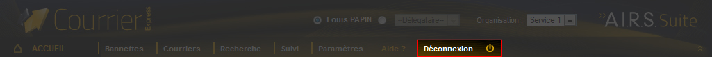

Une fois connecté à AIRS Courrier Express, l'utilisateur peut se déconnecter à tout moment en cliquant sur le lien Déconnexion. Une fois l'utilisateur déconnecté, la page de Connexion est affichée.
Figure 3.2. Lien de déconnexion
